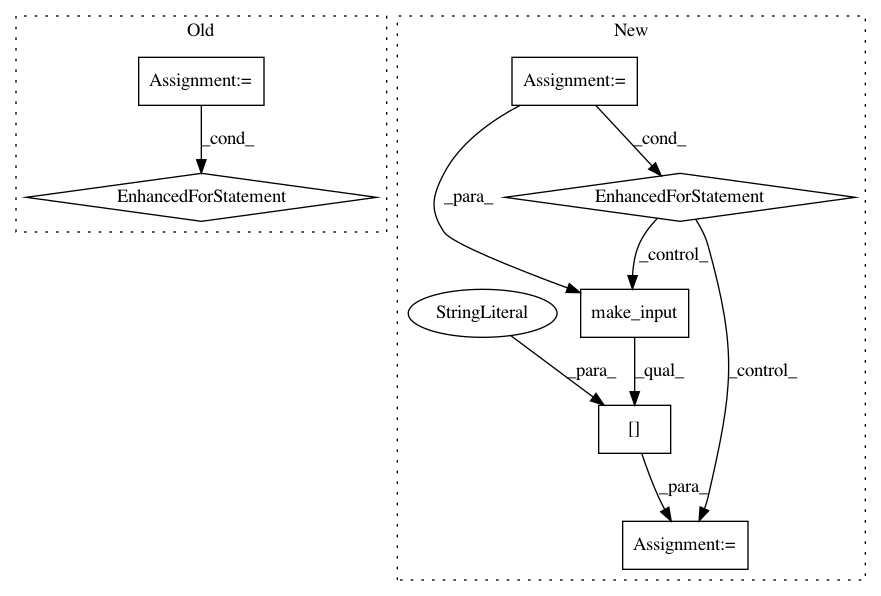

029fdb5624fafee03a59f49d86b676f25851febf,python/baseline/tf/seq2seq/train.py,Seq2SeqTrainerTf,train,#Seq2SeqTrainerTf#Any#Any#,31
Before Change
steps = 0
metrics = {}
duration = 0
for src, tgt, src_len, tgt_len in ts:
start_time = time.time()
steps += 1
feed_dict = self.model.make_feed_dict(src, src_len, tgt, tgt_len, do_dropout=True)
_, global_step, lossv = self.model.sess.run([self.train_op, self.global_step, self.loss], feed_dict=feed_dict)
total_loss += lossv
duration += time.time() - start_time
if steps % 500 == 0:
print("Step time (%.3f sec)" % (duration / 500.))
duration = 0
metrics["avg_loss"] = total_loss / steps
metrics["perplexity"] = np.exp(total_loss / steps)
for reporting in reporting_fns:
reporting(metrics, global_step, "Train")
assert(steps == len(ts))
metrics["avg_loss"] = total_loss / steps
metrics["perplexity"] = np.exp(total_loss / steps)
After Change
"train_op": self.train_op,
"global_step": self.global_step}
for batch_dict in ts:
start_time = time.time()
steps += 1
feed_dict = self.model.make_input(batch_dict, do_dropout=True)
vals = self.model.sess.run(fetches, feed_dict=feed_dict)
global_step = vals["global_step"]
lossv = vals["loss"]
total_loss += lossv
duration += time.time() - start_time
if steps % 500 == 0:
print("Step time (%.3f sec)" % (duration / 500.))
duration = 0
metrics["avg_loss"] = total_loss / steps
metrics["perplexity"] = np.exp(total_loss / steps)
for reporting in reporting_fns:
reporting(metrics, global_step, "Train")
assert(steps == len(ts))
metrics["avg_loss"] = total_loss / steps
metrics["perplexity"] = np.exp(total_loss / steps)
In pattern: SUPERPATTERN
Frequency: 3
Non-data size: 7
Instances
Project Name: dpressel/mead-baseline
Commit Name: 029fdb5624fafee03a59f49d86b676f25851febf
Time: 2017-11-22
Author: dpressel@gmail.com
File Name: python/baseline/tf/seq2seq/train.py
Class Name: Seq2SeqTrainerTf
Method Name: train
Project Name: dpressel/mead-baseline
Commit Name: 029fdb5624fafee03a59f49d86b676f25851febf
Time: 2017-11-22
Author: dpressel@gmail.com
File Name: python/baseline/tf/seq2seq/train.py
Class Name: Seq2SeqTrainerTf
Method Name: test
Project Name: dpressel/mead-baseline
Commit Name: 029fdb5624fafee03a59f49d86b676f25851febf
Time: 2017-11-22
Author: dpressel@gmail.com
File Name: python/baseline/pytorch/tagger/train.py
Class Name: TaggerTrainerPyTorch
Method Name: _test